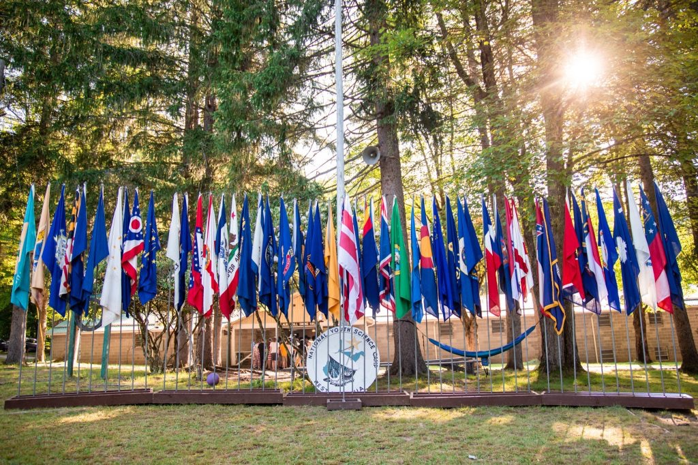
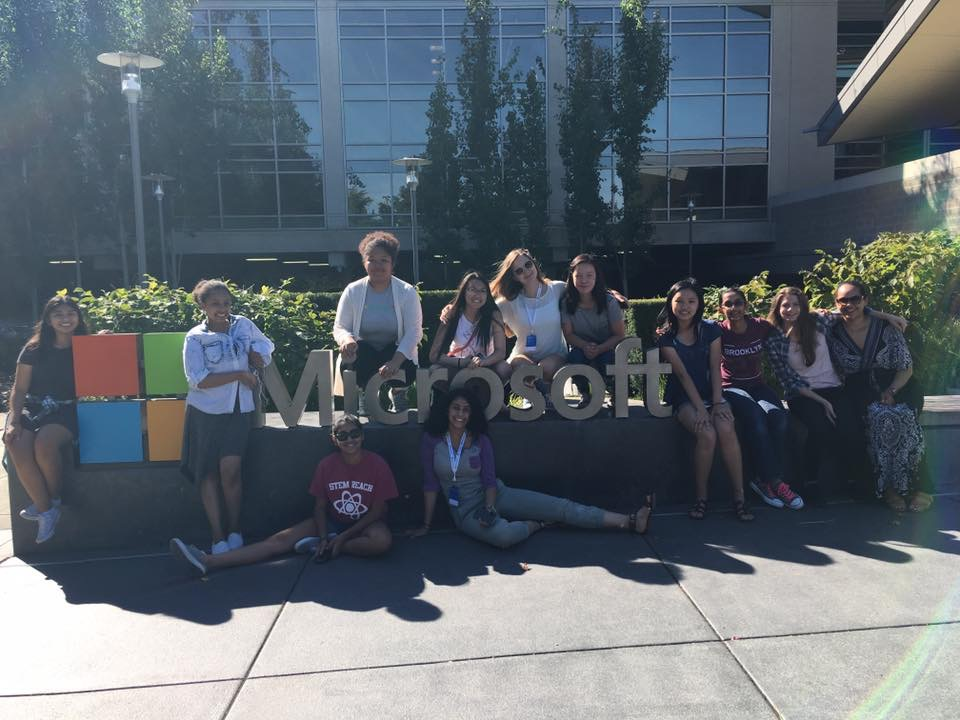

Amy Li
Hello! My name is Amy, and I'm a freshman at Carnegie Mellon's School of Computer Science.
I grew up in Seattle and have lived there my whole life.
While, I'm not learning as much as I can about technology, I enjoy reading, swimming, playing violin, running, and baking.
Some fun facts about me:
• I once played in a concert with Macklemore and Ryan Lewis.
• I conquered the Via Ferrata in the mountains of West Virginia.
• Last summer, I helped put together a solar energy system to power a computer lab.
Past (and future) endeavors:
Microsoft Explore Intern
Summer 2019
This summer, I am super excited to be joining Microsoft as an Explore Intern.
I will gain hands-on experience in both software engineering and program management roles
to learn more about future career options in the tech industry.

National Youth Science Camp Delegate
Summer 2018
Last summer, I spent 3 1/2 weeks in the woods of West Virginia with no cell phone service and almost no internet connection.
Surrounded by 106 fellow delegates from all 50 states and a few other countries, I learned about applications of STEM research in the real world and why it is important to have ethical leadership in these fields.
I also gained a newfound appreciation for being in the great outdoors by going on three overnight backpacking trips and going rock climbing, caving, and mountain biking.

Software Developer Apprentice at Expedia
Summer 2017
During the summer of 2017, I interned at Expedia on the Packages Orchestration Team.
I was responsible for developing A/B tests in the flight selection and checkout pages to improve site usability and increase customer conversion for the Bundle Deals shopping path. At the end of the summer, some of the features I created were tested and shipped to production on Expedia's international sites.

Girls Who Code Summer Immersion Program @ Microsoft
Summer 2016
Over the course of 7 weeks, I was exposed to many different areas of computer science, from computer graphics to robotics to web development. The countless ways these tools could be used to improve people's lives inspired me to pursue a career in technology.
The summer culminated in a 2-week long final project.

Girls Who Code Club Co-founder and President
2015-2018
In response to the gender imbalance in CS-related classes and clubs at my high school, I helped found the Garfield Girls Who Code Club in order to encourage more girls from my school and the local community to learn computer science.
I taught weekly lessons on Python and Web Development.